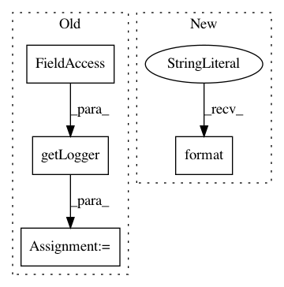

16246c8a9d84c875208a5e370da87888e799dd96,src/python/pants/pantsd/watchman.py,Watchman,__init__,#Watchman#Any#Any#Any#Any#Any#Any#Any#,31
Before Change
self._sock_file = socket_path_override or os.path.join(self._watchman_work_dir,
"{}.sock".format(self.name))
self._logger = logging.getLogger(__name__)
self._watchman_client = None
@property
def client(self):
After Change
def _maybe_init_metadata(self):
safe_mkdir(self._watchman_work_dir)
// Initialize watchman with an empty, but valid statefile so it doesn"t complain on startup.
safe_file_dump(self._state_file, "{}")
def _construct_cmd(self, cmd_parts, state_file, sock_file, log_file, log_level):
In pattern: SUPERPATTERN
Frequency: 3
Non-data size: 4
Instances
Project Name: pantsbuild/pants
Commit Name: 16246c8a9d84c875208a5e370da87888e799dd96
Time: 2017-11-08
Author: stuhood@twitter.com
File Name: src/python/pants/pantsd/watchman.py
Class Name: Watchman
Method Name: __init__
Project Name: home-assistant/home-assistant
Commit Name: 8ee32a8fbd3b476abf4801e93e6157bd35f380ad
Time: 2017-05-30
Author: tchello.mello@gmail.com
File Name: homeassistant/components/cover/myq.py
Class Name:
Method Name: setup_platform
Project Name: EducationalTestingService/skll
Commit Name: 700a83deee93d13bd54849bfdac34fefda9c8f07
Time: 2017-10-30
Author: nmadnani@ets.org
File Name: skll/data/writers.py
Class Name: Writer
Method Name: write